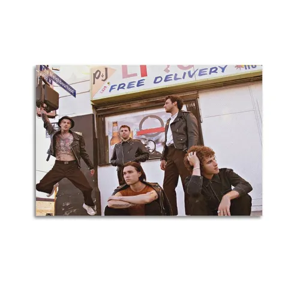
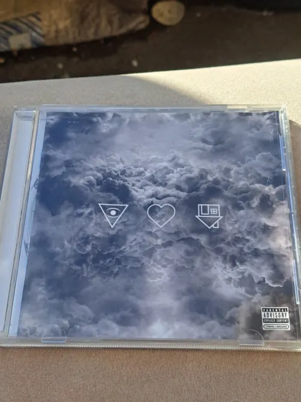

The main theme of "Reflections" by The Neighbourhood is longing, emotional connection, and the pain of separation, capturing the complexity of a relationship that feels both transformative and unsustainable. Released in 2021 on the album Hard to Imagine the Neighbourhood Ever Changing, the song explores the narrator's struggle with absence, admitting that while they have "got along," they have been "sad" since their partner left. Key lyrical interpretations include: "I see my reflection in your eyes" signifies a deep, intertwined bond where the narrator sees their own identity mirrored in the other person, highlighting the relationship's transformative impact. "We were too close to the stars" suggests a connection that was extraordinary and otherworldly, yet perhaps too intense to last without causing harm. "I'd rather lose somebody than use somebody" reflects a moral stance on authenticity, indicating the narrator prefers the pain of loss over the guilt of exploiting a partner for their own emotional needs. The phrase "Maybe it's a blessing in disguise" hints at the possibility of personal growth and self-discovery emerging from the heartbreak of the breakup. The song resonates with themes of isolation and the desire for connection, particularly relevant during the global pandemic when physical distance often translated to emotional distance. While the tone is melancholic, the lyrics convey a sense of hope and healing, suggesting that vulnerability and the desire for understanding can lead to reconnection or at least acceptance. Some interpretations also suggest the song touches on one-sided love or the fear of intimacy stemming from past trauma, where the narrator sees their own flaws and weaknesses reflected in their partner's eyes.

[Verse 1]
Where have you been?
Do you know when you're coming back?
'Cause since you've been gone
I've got along but I've been sad
[Pre-Chorus]
I tried to put it out for you to get
Could've, should've but you never did
Wish you wanted it a little bit
More but it's a chore for you to give
[Refrain]
Where have you been?
Do you know if you're coming back?
[Chorus]
I never knew somebody like you, somebody
Falling just as hard
I'd rather lose somebody than use somebody
Maybe it's a blessing in disguise (I see myself in you)
I see my reflection in your eyes
[Verse 2]
I know you're sick
Hoping you fix whatever's broken
Ignorant bliss
And a few sips might be the potion
[Pre-Chorus]
I tried to put it out for you to get
Could've, should've but you never did
Wish you wanted in a little bit
More but it's a chore for you to give
[Refrain]
Where have you been?
Do you know if you're coming back?
[Chorus]
We were too close to the stars
I never knew somebody like you, somebody
Falling just as hard
I'd rather lose somebody than use somebody
Maybe it's a blessing in disguise (I see myself in you)
I see my reflection in your eyes (Tell me you see it too)
[Bridge]
So close, so close
Yet so far away (So far)
I don't know (I don't)
How to be solo (No)
So don't go, oh, no, just stay
You and I were bright, shooting through the sky daily (Yeah)
Lighting up the night, wasn't always right, baby (Mhm)
